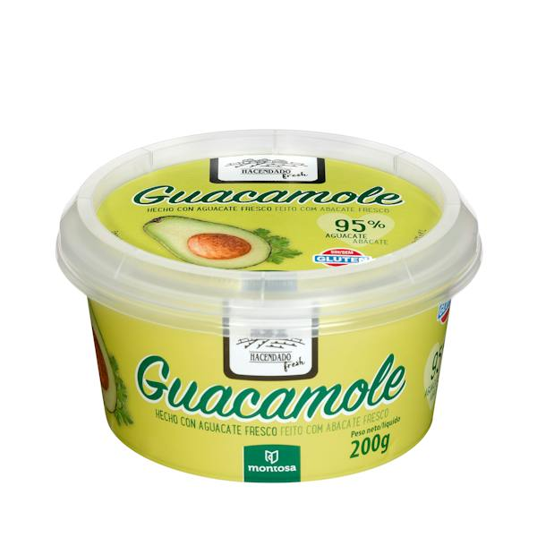

| Volver atras |
|---|

Esta clásica receta del Oriente Medio está elaborada a base de garbanzos cocidos y triturados hasta lograr una pasta suave, homogénea y muy cremosa. Su sabor característico proviene de la combinación de tahini (pasta de sésamo tostado), aceite de oliva, un suave toque de ajo y un ligero matiz de zumo de limón. Es una opción nutritiva, rica en fibra y proteína vegetal, perfecta para tomar como aperitivo saludable acompañado de picos de pan, pan de pita tostado o bastoncitos de verduras crudas (zanahoria, pepino o pimiento).